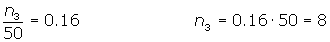
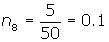

Ejercicios de frecuencias
Ejercicios resueltos de frecuencias
1. Durante el mes de julio, en una ciudad se han registrado las siguientes temperaturas máximas:
32, 31, 28, 29, 33, 32, 31, 30, 31, 31, 27, 28, 29, 30, 32, 31, 31, 30, 30, 29, 29, 30, 30, 31, 30, 31, 34, 33, 33, 29, 29.
Construir la tabla de frecuencias.
| xi | fi | Fi | ni | Ni |
|---|---|---|---|---|
| 27 | 1 | 1 | 0.032 | 0.032 |
| 28 | 2 | 3 | 0.065 | 0.097 |
| 29 | 6 | 9 | 0.194 | 0.290 |
| 30 | 7 | 16 | 0.226 | 0.516 |
| 31 | 8 | 24 | 0.258 | 0.774 |
| 32 | 3 | 27 | 0.097 | 0.871 |
| 33 | 3 | 30 | 0.097 | 0.968 |
| 34 | 1 | 31 | 0.032 | 1 |
| 31 | 1 |
2.Los pesos de los 65 empleados de una fábrica vienen dados por la siguiente tabla:
| Peso | [50, 60) | [60, 70) | [70, 80) | [80,90) | [90, 100) | [100, 110) | [110, 120) |
| fi | 8 | 10 | 16 | 14 | 10 | 5 | 2 |
Construir la tabla de frecuencias.
| xi | fi | Fi | ni | Ni | |
| [50, 60) | 55 | 8 | 8 | 0.12 | 0.12 |
| [60, 70) | 65 | 10 | 18 | 0.15 | 0.27 |
| [70, 80) | 75 | 16 | 34 | 0.24 | 0.51 |
| [80,90) | 85 | 14 | 48 | 0.22 | 0.73 |
| [90, 100) | 95 | 10 | 58 | 0.15 | 0.88 |
| [100, 110) | 105 | 5 | 63 | 0.08 | 0.96 |
| [110, 120) | 115 | 2 | 65 | 0.03 | 0.99 |
| 65 |
3.Un dentista observa el número de caries en cada uno de los 100 niños de cierto colegio. La información obtenida a parecer resumida en la siguiente tabla:
| Nº de caries | fi | ni |
| 0 | 25 | 0.25 |
| 1 | 20 | 0.2 |
| 2 | x | z |
| 3 | 15 | 0.15 |
| 4 | y | 0.05 |
Completar la tabla obteniendo los valores x, y, z.
La suma de las frecuencias relativas ha de ser igual a 1:
0.25 + 0.2 + z + 0.15 + 0.05 = 1
0.65 + z = 1 z = 0.35
La frecuencia relativa de un dato es igual su frecuencia absoluta dividida entre 100, que es la suma de las frecuencias absolutas.


| Nº de caries | fi | ni | fi · ni |
| 0 | 25 | 0.25 | 0 |
| 1 | 20 | 0.2 | 20 |
| 2 | 35 | 0.35 | 70 |
| 3 | 15 | 0.15 | 45 |
| 4 | 5 | 0.05 | 20 |
| 155 |
4.Completar los datos que faltan en la siguiente tabla estadística:
| xi | fi | Fi | ni |
| 1 | 4 | 0.08 | |
| 2 | 4 | ||
| 3 | 16 | 0.16 | |
| 4 | 7 | 0.14 | |
| 5 | 5 | 28 | |
| 6 | 38 | ||
| 7 | 7 | 45 | |
| 8 |
Calcular la media, mediana y moda de esta distribución.
Primera fila:
F1 = 4
Segunda fila:
F2 = 4 + 4 = 8 
Tercera fila:

Cuarta fila:
N4 = 16 + 7 = 23
Quinta fila:

Sexta fila:
28 + n8 = 38 n8 = 10 
Séptima fila:

Octava fila:
N8 = N = 50 n8 = 50 − 45 = 5 
| xi | fi | Fi | ni | xi · fi |
| 1 | 4 | 4 | 0.08 | 4 |
| 2 | 4 | 8 | 0.08 | 8 |
| 3 | 8 | 16 | 0.16 | 24 |
| 4 | 7 | 23 | 0.14 | 28 |
| 5 | 5 | 28 | 0.1 | 25 |
| 6 | 10 | 38 | 0.2 | 60 |
| 7 | 7 | 45 | 0.14 | 49 |
| 8 | 5 | 50 | 0.1 | 40 |
| 50 | 238 |